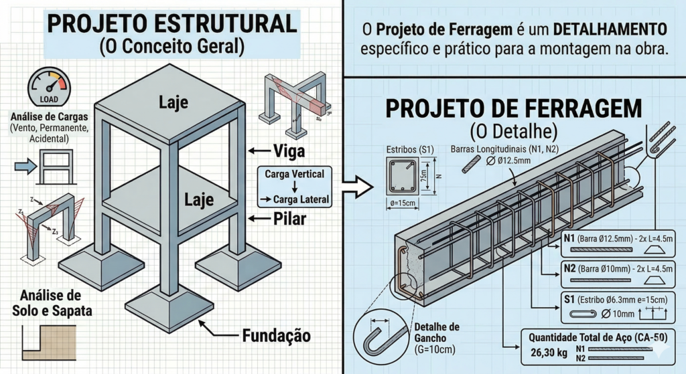
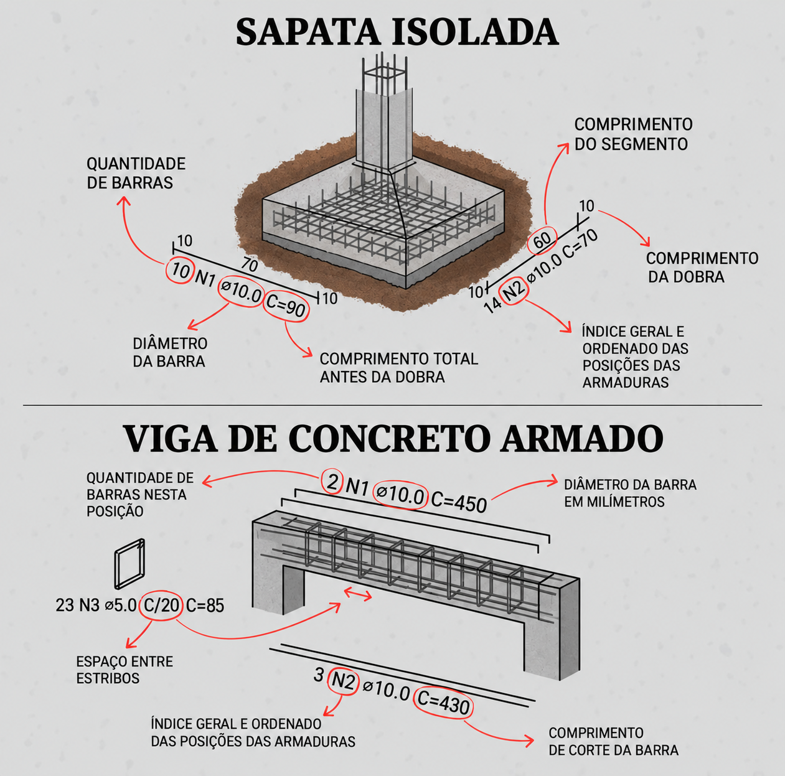

O que é um projeto de ferragem?
É o desenho que mostra onde entra cada barra de aço dentro do concreto. O aço é o que segura o concreto quando ele é puxado (esforço de tração), torcido (torção) ou dobrado (flexão) — sozinho, o concreto aguenta bem o peso em cima (compressão), mas racha fácil nesses outros esforços.
O que é o projeto estrutural?
É o projeto "geral" da construção. Nele o engenheiro calcula o peso que a obra vai aguentar e decide onde ficam os pilares, as vigas, as sapatas e o tamanho de cada uma.
Qual a diferença entre projeto de ferragem e projeto estrutural?
O projeto estrutural mostra a ideia geral: "aqui vai uma viga desse tamanho". O projeto de ferragem mostra o detalhe: quantos ferros de 10 mm entram dentro dessa viga e como eles são amarrados uns nos outros.

Para que serve o projeto de ferragem?
Para a obra ficar segura sem gastar aço à toa. O aço segura o que o concreto sozinho não aguenta, e o projeto já calcula a quantidade certa — nem menos (risco) nem mais (desperdício).
Segurança da estrutura
O aço aguenta as forças que o concreto sozinho não aguentaria. Se alguém ler errado a posição de uma barra e ela ficar faltando no lugar certo, isso pode enfraquecer a peça.
Economia de material
O projeto evita colocar ferro a mais ou a menos. O engenheiro calcula exatamente o dimensionado para a peça, e o papel da fábrica ou canteiro é identificar e seguir com exatidão esse detalhamento.
Quais são as partes de um projeto de ferragem?
O projeto normalmente vem em folhas separadas por tipo: a forma da peça, o desenho do ferro, os cortes, a tabela com o resumo do aço e a lista de símbolos.
- Planta de formas: mostra a "caixa" de madeira onde o concreto vai ser jogado, ou seja, o formato e o tamanho de cada peça.
- Planta de armadura: é o desenho do ferro em si — mostra as barras compridas e os estribos (os "anéis" de ferro).
- Cortes e detalhes: um desenho de como seria a peça se você a cortasse no meio, pra ver as camadas de ferro por dentro.
- Tabela de aço: o resumo de tudo — o peso total, o comprimento de cada barra e o tipo de aço (CA-50 ou CA-60).
- Legendas e símbolos: a "legenda" do desenho, explicando o que cada letra e sinal quer dizer.
Como ler um projeto de ferragem passo a passo?
Ache o nome da peça, veja o tamanho dela, veja onde fica cada ferro, entenda o corte e confira se a tabela bate com o que chegou na obra.
- Ache a peça: olhe o título do desenho (Viga V1, Pilar P3, Sapata S1).
- Veja o tamanho: confira a largura e a altura do concreto (ex.: 15x30 cm).
- Veja a posição do ferro: ele está em cima ou embaixo da peça? No meio ou nas pontas?
- Entenda o corte: o "corte A-A" é o desenho de como a peça ficaria se você a cortasse no meio — ele mostra onde cada ferro fica por dentro.
- Confira a tabela: veja se o peso de aço que chegou na obra bate com o resumo do projeto.
O que quem monta a ferragem precisa conferir antes de montar?
Quatro coisas: se o ferro é o certo (bitola e tipo de aço), se as medidas de corte e dobra batem com a lista, se cada barra está na posição certa (superior/inferior, positiva/negativa) e se a amarração está firme, com o cobrimento certo.
Ferro certo: confira se a bitola e o tipo de aço (CA-50 ou CA-60) da barra que você tem na mão são os mesmos que a tabela do projeto pede pra aquela posição. Trocar a bitola ou o tipo de aço sem o engenheiro recalcular compromete a peça.
Medidas certas: o comprimento de corte e o tamanho de cada dobra precisam bater com o que está na lista de corte, posição por posição. É essa dobra que faz o ferro "segurar" bem dentro do concreto — reduzir a medida por conta própria compromete isso, mesmo que pareça uma diferença pequena.
Posição certa: cada barra tem um lugar — em cima ou embaixo da peça, perto das pontas ou no meio. Trocar a posição de uma barra deixa a peça fraca justamente onde ela mais precisa de reforço, mesmo usando o ferro certo.
Amarração e cobrimento: amarre bem as barras com arame pra armadura não se mexer na hora de concretar, e use os espaçadores plásticos (as "cadeirinhas") pra manter a distância certa entre o ferro e a forma — essa distância (o cobrimento) muda conforme o ambiente da obra; veja a tabela completa em como calcular a ferragem de uma viga.
Como interpretar na prática as anotações de uma peça?
Cada anotação no desenho conta uma parte da história: quantas barras tem, qual a grossura delas, qual o número de cada uma (N1, N2...), o comprimento da barra esticada e o comprimento de cada dobra. Veja como isso aparece numa sapata e numa viga.

Dúvidas frequentes
O que significa a marcação N1 no projeto?
O "N" é o número da barra na lista de corte — é como um nome pra cada tipo de ferro. Com esse número, o armador olha a tabela e descobre o comprimento e a dobra exata que precisa fazer antes de montar.
Qual a diferença real entre aço CA-50 e CA-60?
É a superfície e a resistência. O CA-50 tem nervuras (é mais áspero) para grudar melhor no concreto, e suporta 500 MPa de força. O CA-60 é mais liso, geralmente mais fino, e suporta 600 MPa. Trocar um pelo outro sem o engenheiro recalcular compromete a segurança da peça.
O que o símbolo "c/15" quer dizer na prática?
Quer dizer "a cada 15 centímetros" — é a distância entre o centro de uma barra e o centro da próxima. Deixar um espaço maior do que o projetado deixa a estrutura mais fraca; um espaço menor pode atrapalhar o concreto de passar entre os ferros na hora de concretar.
Posso trocar uma barra de 10 mm por duas de 5 mm?
Não é recomendado. Mesmo que a quantidade de aço pareça igual na conta, o jeito como a peça se comporta muda — a força de grudar no concreto, a flexibilidade e como a carga se distribui são diferentes. Siga sempre o que o engenheiro calculista definiu.